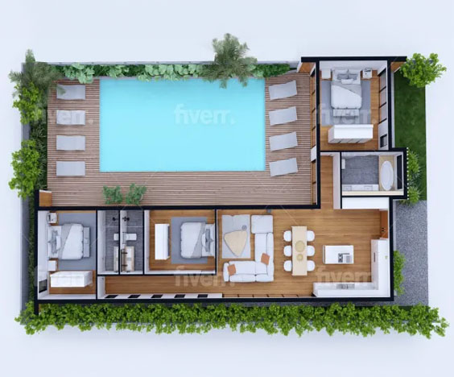

The 3D artists start by modelling the space using different shapes, like cubes, cuboids and prisms. After the exterior shell is done, textures are added to replicate materials such as marble, rocks, or concrete. This gives a clear and realistic end render that helps clients decide what they want to add or change within their building. The model regularly shows information about every building component. This visualisation can also help show how the finished building would look like when compared to neighbor buildings and environments.
Not only does 3D modelling help with building exteriors, but it also helps with interior design. By having a 3D interior space, one can see how different furniture styles fit within the space, one can see the sizes and fit of furniture and also the colour palette. This is a good way to make sure a building is furnished well without having to spend large amounts of money on furniture then seeing it doesnt fit by size or aesthetically.
But it's not always for realistic renders. Architecture design is also used to create models of fictional buildings, like medieval buildings. These buildings, such as medieval replicas, are mainly used for environments in video games or to create a render of a scene.